系统概述
本系统（混合大模型管理系统）是一套面向本地部署的大语言模型综合管理平台，集文件管理、用户权限、模型调度、AI 对话、系统监控于一体，提供安全、高效、便捷的一站式操作体验。
系统基于 Java + Spring Boot 构建，前端采用 Bootstrap 5，后端通过 llama.cpp 调度本地 GGUF 格式的大语言模型，同时支持 OpenAI 兼容的远程 API 接入。其核心目标是解决本地模型部署中繁琐的路径权限管理、模型参数配置以及资源监控问题。
系统提供两个版本，版本号后缀标识如下：
| 版本 | 版本号后缀 | 说明 | 包含功能 |
|---|---|---|---|
| 基础版 | release_base | 精简部署版本 | 文件管理、用户管理、AI 聊天、权限体系等核心功能 |
| 完全版 | release_ultimate | 全功能版本 | 基础版全部功能 + 模型管理、资源监控、定时开关机等高级功能 |
nvidia-smi 工具，仅支持搭载 NVIDIA 显卡的系统。macOS 系统使用 Apple Silicon (M 系列) 或集成显卡，无对应监控接口，因此 macOS 下不提供 GPU 监控面板。核心功能亮点
完全离线，无需联网
前端资源完全离线，不依赖任何外网 CDN，开箱即用，方便内网部署使用。
无需数据库配置 跨平台
支持 Windows、Linux、macOS 三大平台，无需数据库配置，开箱即用。单 Jar 包部署，零依赖，启动即可运行。
细粒度路径权限
基于路径继承的权限校验机制，支持读取、执行、上传、下载、删除五类权限。支持角色最小权限限制及特定用户额外授权，确保数据安全。
项目级 AI 分析
支持文件批量上传，自动提取文本内容。可将整个源代码目录中的关键文件一次性提交给 AI，实现跨文件的项目级代码分析与重构建议。
最新 llama.cpp 特性支持
深度集成 llama.cpp 最新能力，全面支持多 GPU 并行加速（对应 llama.cpp 的 SM Tensor）与预测推理（Speculative Decoding）加速：支持 MTP (Multi-Token Prediction)、DFlash、DSpark 三种类型，显著提升大模型推理吞吐量与响应速度。
GGUF 自动化管理
自动识别 GGUF 分片文件并支持一键合并。内置命名规范检查，确保模型文件命名统一，方便快速检索与调度。
实时资源监控
集成 nvidia-smi 实时监控，提供 GPU 显存使用率和系统内存的趋势图表，帮助管理员在模型启动前评估资源可用性。
智能定时重启
支持一次性与周期性（按工作日）定时关机/唤醒任务。具备任务冲突检测与到期前预警功能，适合无人值守的服务器环境。
用户角色说明
| 角色 | 权限级别 | 说明 | 可访问功能 |
|---|---|---|---|
| 管理员 (Admin) | 最高 (Level 3) | 系统维护者 | 全部功能：文件管理、用户管理、模型管理、资源监控、定时关机、全局配置 |
| 普通用户 (User) | 标准 (Level 2) | 正式注册用户 | 文件管理（受权限约束）、AI 聊天、个人设置；帐号具有有效期，到期自动封禁 |
| 访客 (Guest) | 临时 (Level 1) | 自助注册账号 | 文件管理（受权限约束）、AI 聊天、个人设置；账号具有有效期，到期自动封禁 |
登录与注册
系统默认访问地址为 http://<服务器IP>:8098/command。
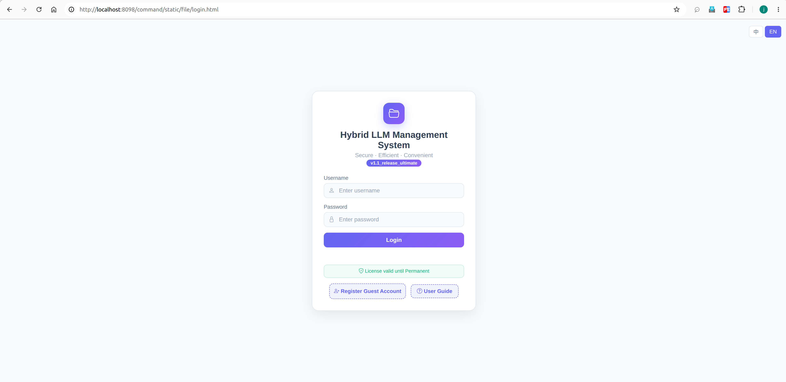
登录页面提供简单的账号密码验证。如果账户被管理员封禁，用户可在页面下方填写申请原因提交解封申请，管理员在用户管理页面可一键处理。
访客自助注册
当管理员在系统设置中开启"访客注册"后，登录页将显示注册链接。
注册要求：
- 用户名：英文字母开头，3~32 个字符
- 密码：8~20 位，必须同时包含数字和字母
- 有效期：注册成功后，账号将获得由管理员预设的默认有效期（如 7 天），过期后自动转为封禁状态。
文件管理系统
文件管理器是系统的核心模块，旨在提供类似本地资源管理器的操作体验，同时集成严格的权限校验。
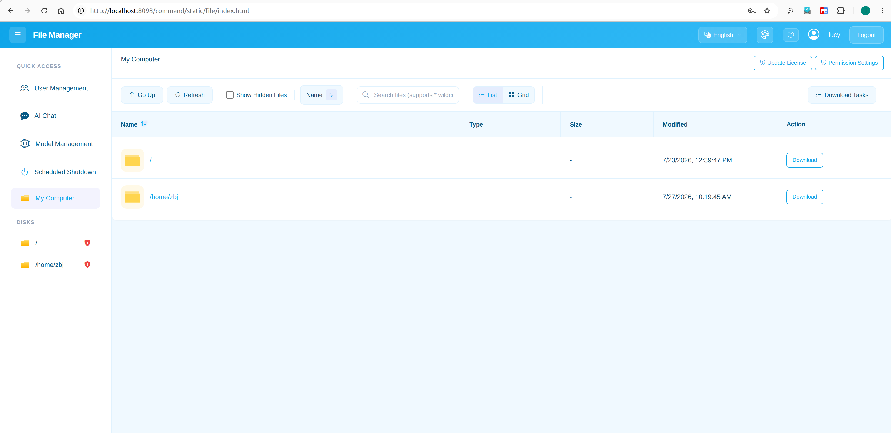
界面功能详解
- 根目录切换左侧导航栏显示可访问的根路径。对于 Linux/macOS 系统，默认显示系统根路径 ( / ) 和用户主目录 ( ~ )；对于 Windows 系统，则显示检测到的所有磁盘盘符（如 C:\, D:\）。点击可快速切换当前工作空间。
- 路径导航顶部面包屑导航支持点击任意层级快速回溯。
- 高效搜索支持文件名模糊匹配，可使用通配符（如
*.py）快速筛选特定类型文件。 - 视图切换支持列表视图（显示详细属性）与平铺视图（适合图片浏览）切换。
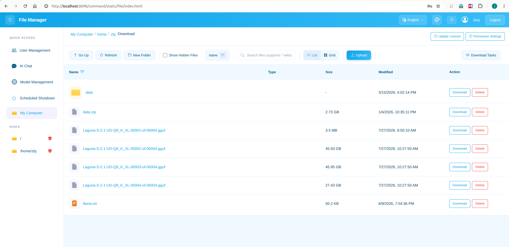
智能上传
支持文件的批量上传，采用分片上传技术确保大文件传输的稳定性。
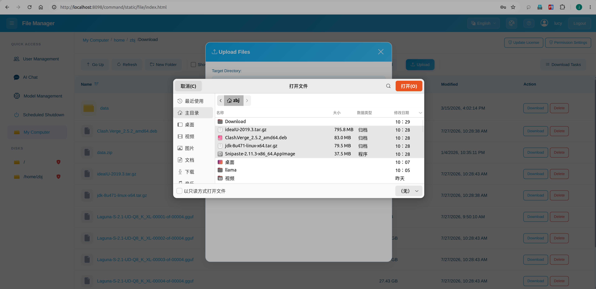
上传特性：
- 拖拽支持直接将本地文件拖入浏览器窗口即可触发上传。
- 进度追踪右侧任务栏实时显示每个分片的上传进度和整体百分比。
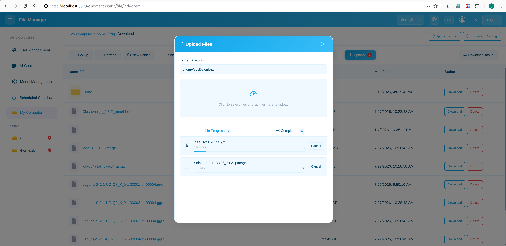
上传成功后，文件列表将实时更新，显示新上传的文件及其属性：
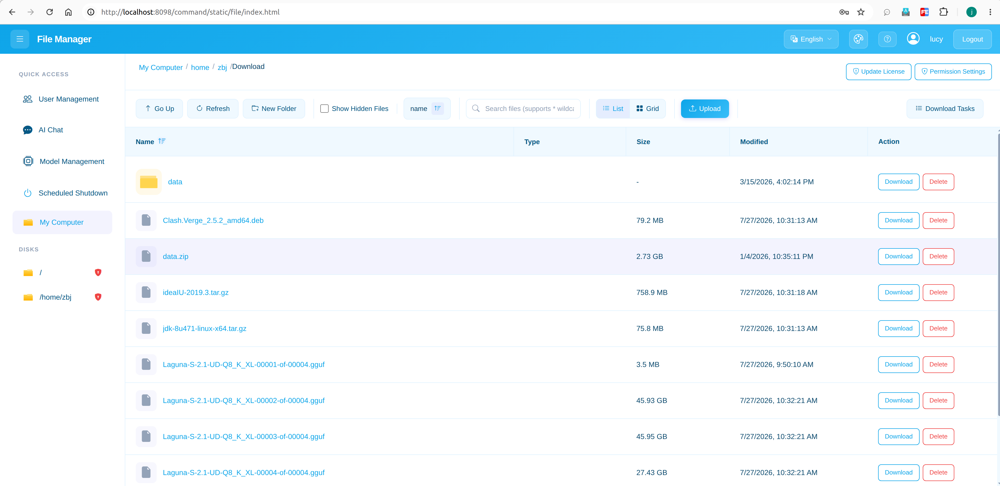
灵活下载
单个文件点击下载按钮即可直接获取。对于文件夹，系统会在后台自动将其打包为 .zip 压缩包，完成后通过下载任务列表通知用户。
多媒体预览
系统内置高效的预览引擎，无需下载即可查看内容：
| 类型 | 支持格式 | 预览特性 |
|---|---|---|
| 图片 | JPG, PNG, GIF, WebP | 支持全屏查看 |
| 视频/音频 | MP4, WebM, MP3, WAV | 支持 Range 请求，可随意拖动进度条（Seek） |
| 文档 | 内置 PDF.js 阅读器，支持在线预览 | |
| 文本 | Java, Python, JS, HTML, JSON, YAML 等 | 支持常见文本内容预览 |
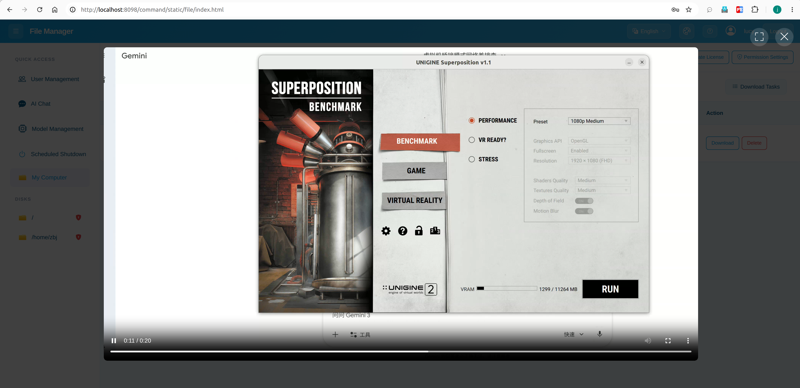
安全删除
删除操作需经过二次确认。系统严格校验 DELETE 权限。对于标记为受保护的路径，即使是管理员也无法执行删除操作，以防止误删系统核心文件。
新建文件夹
"新建文件夹"是文件夹特有功能。在文件管理器的工具栏中点击"新建文件夹"按钮，输入文件夹名称即可创建。该功能与文件夹的上传权限绑定，拥有当前目录上传权限即可新建文件夹。在根目录列表页面无法新建文件夹，需要进入具体的目录后才能使用此功能。
细粒度权限体系
本系统采用一套基于路径继承的权限校验算法，确保资源访问的绝对安全。
权限校验逻辑
- 路径继承当访问
/home/data/file.txt时，若该文件未设置规则，系统将向上追溯至/home/data→/home→/，直到找到最近的一条匹配规则。 - 权限级联 (优先级)权限之间存在包含关系，级别越高则自动拥有低级别权限。优先级顺序为：
删除 (Delete) > 上传 (Upload) > 下载 (Download) > 执行 (Execute) > 读取 (Read)。
例如：拥有"删除"权限的用户自动拥有该路径的所有其他权限。 - 角色与用户双重校验每项权限可配置"最小允许角色"（如：仅限普通用户及以上），同时支持添加"特定授权用户"名单，实现灵活的特权管理。
权限类型与作用详解
系统将权限分为"通用权限"和"文件夹特有权限"，其具体作用如下：
| 权限名称 | 适用对象 | 具体作用说明 |
|---|---|---|
| 读取 (Read) | 文件 / 文件夹 | 【最低权限】允许查看文件内容、预览文件。对于文件夹，仅意味着该文件夹在列表中可见，不能进入该文件夹查看内部列表。 |
| 执行 (Execute) | 仅文件夹 | 允许用户"进入"该目录，是查看目录列表、访问其子项的先决条件。 |
| 下载 (Download) | 文件 / 文件夹 | 允许下载单个文件或将整个文件夹打包下载。 |
| 上传 (Upload) | 仅文件夹 | 允许向该目录下上传新文件或覆盖现有文件。 |
| 删除 (Delete) | 文件 / 文件夹 | 【最高权限】允许删除该文件或递归删除整个文件夹。 |
系统支持基于最终目标的权限校验。如果用户没有某个父目录的"执行"权限，但拥有其深层子文件的"读取"权限（例如，拥有
/home/nice/good.txt 的读取权限，但没有 /home/nice 的执行权限），用户仍然可以直接访问该文件。在这种情况下，用户在浏览时只能看到通往该文件的路径（例如只能看到 /home/nice），而无法看到父目录（如 /home）下的其他文件列表。权限配置
管理员可以通过"权限设置"为任意路径定义规则。
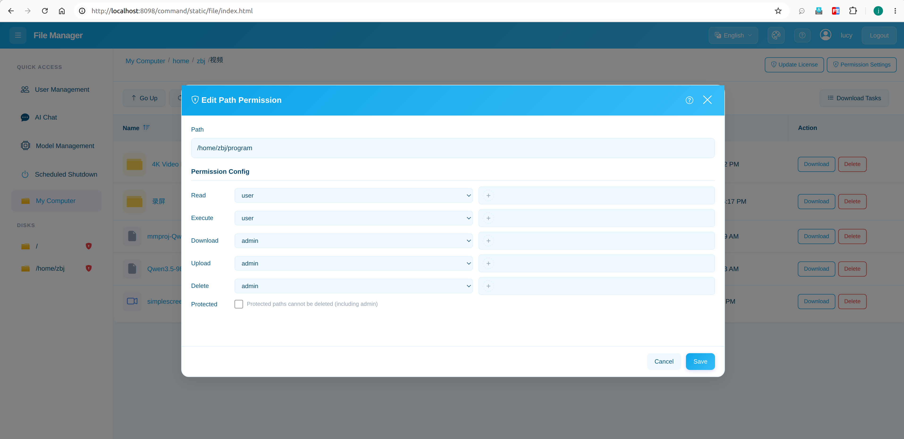
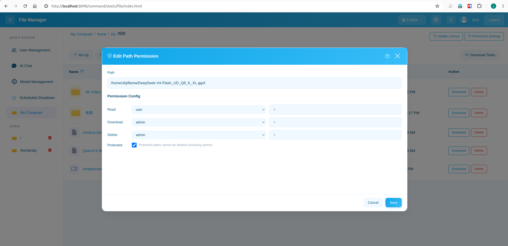
权限树管理
通过可视化树形结构，管理员可以直观地查看整个系统的权限分布，快速定位并修改特定子目录的权限。
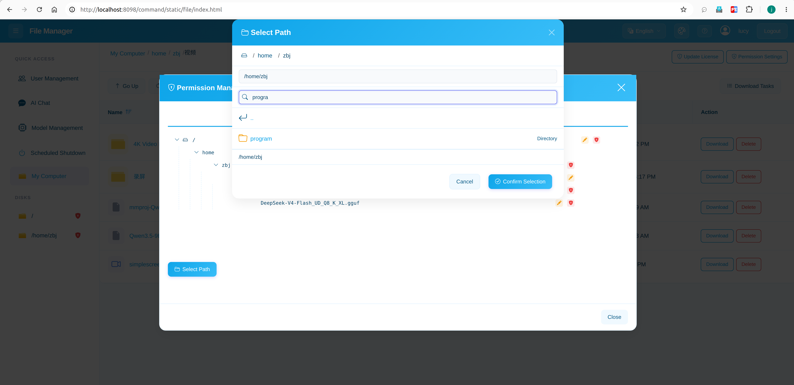
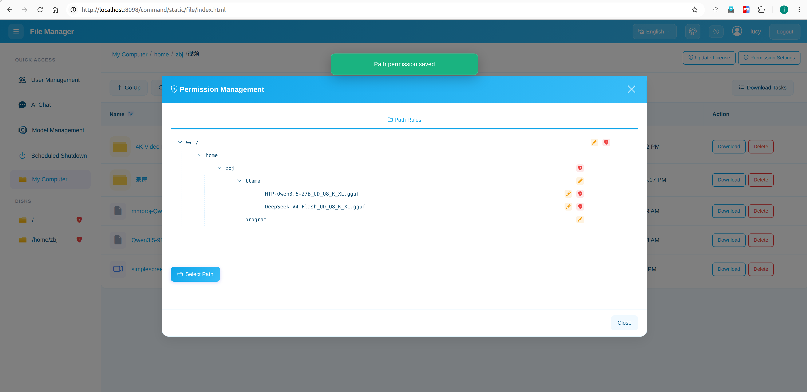
路径保护机制
在权限编辑界面勾选"受保护"后，该路径将被锁定。受保护路径在文件管理界面会显示特殊标识，且所有删除请求将被直接拦截。
用户管理
提供全方位的账户生命周期管理，包括角色切换、状态控制和有效期监控。
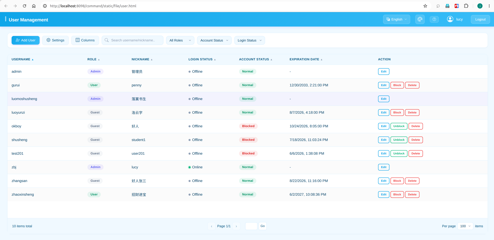
账户编辑
管理员可随时修改用户的角色（Admin/User/Guest）、昵称及密码。对于访客账号，可单独覆盖其注册有效期。
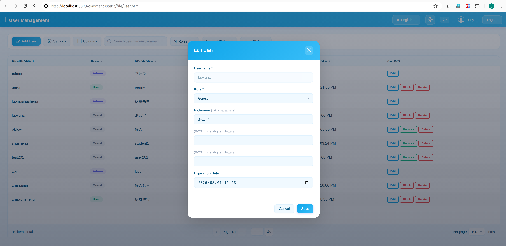
状态控制
支持一键封禁/解封。被封禁用户在尝试登录时会触发解封申请流程，管理员在用户列表页可实时收到申请提醒并进行处理。
访客有效期管理
在用户管理设置中，可配置访客账号的默认有效期（天数）。系统后台任务会定期扫描过期账号并自动执行封禁操作。
AI 智能对话
集成多种本地与远程大模型，提供生产级别的对话体验。
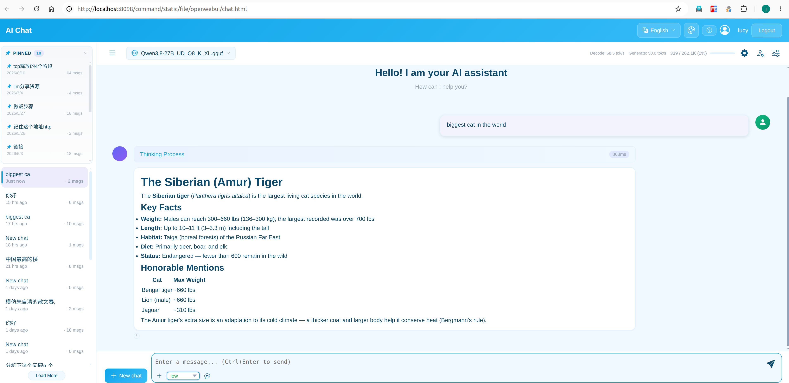
AI 聊天页面提供完整的对话管理能力：
- 新建对话点击左侧"新建对话"按钮开始新的会话
- 加载历史点击左侧会话列表中的任一会话即可加载历史消息
- 删除会话右键或长按会话条目可删除
- 重命名可自定义会话名称
- 置顶会话将常用会话置顶，方便快速访问
附件上传
支持多种附件上传方式，方便将文件内容提交给 AI 进行分析：
- 图片上传支持直接上传截图或图片文件，AI 可识别图片中的文字内容（OCR）。
- 文本文件上传支持上传常见文本格式文件（如 .txt, .java, .py, .js 等），系统自动提取文本内容供 AI 分析。
- 文件夹上传支持将整个文件夹上传。若当前模型支持图片输入，上传的文件夹将包含图片文件；否则仅包含纯文本文件。
- 粘贴文件路径在输入框中粘贴文件路径，系统会自动识别并上传对应文件。
- 复制文件粘贴在文件管理器或 IDE 中复制图片或文本文件后，直接在聊天输入框粘贴即可上传，支持批量复制粘贴。
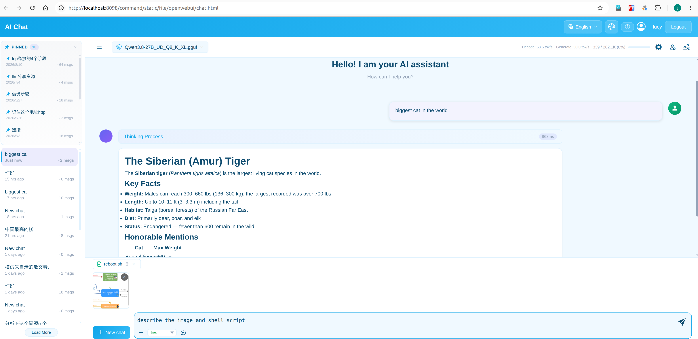
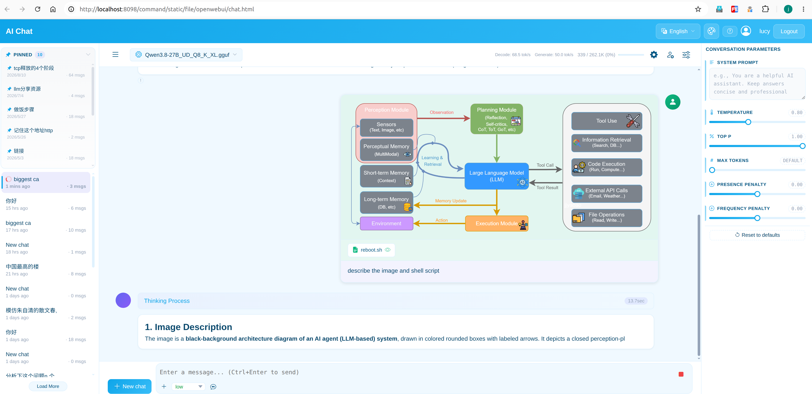
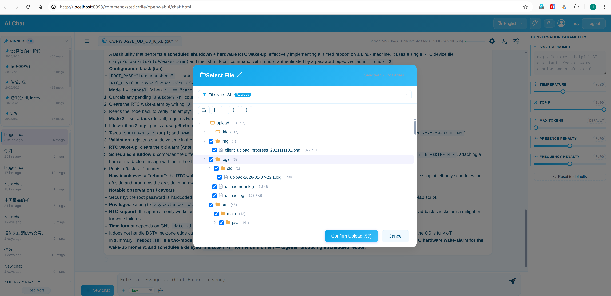
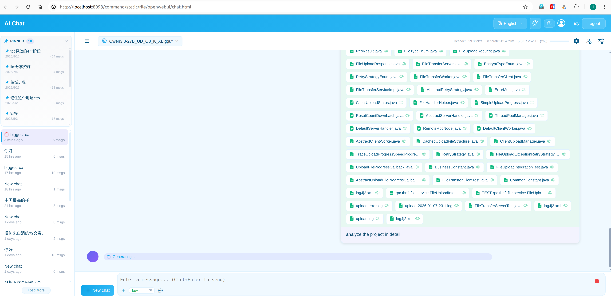
开发者友好
AI 生成的代码块支持一键复制以及直接保存为本地文件。对于长代码，支持折叠显示以优化阅读体验。
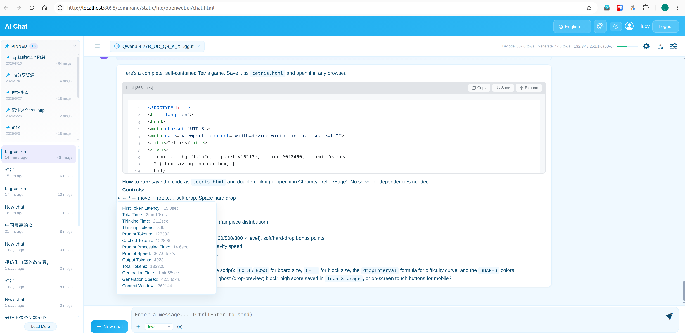
系统级对话配置
管理员可对对话体验进行深度定制：
- OpenAPI 接入配置外部 API 端点和 Key，扩展模型库。
- 模型功能定义通过精确匹配或正则表达式匹配模型名称，定义多模态功能、思考模式与可见范围，并可覆盖自动检测出的模型配置（详见下方"模型功能定义与思考模式配置"）。
- 配额管理按角色限制附件大小、最大消息数等，防止资源滥用。
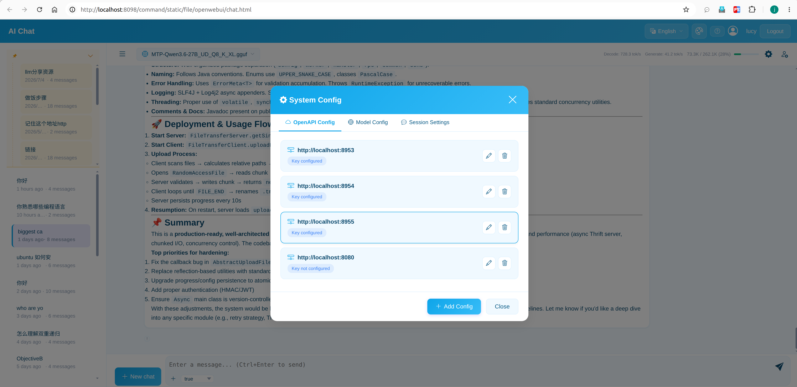
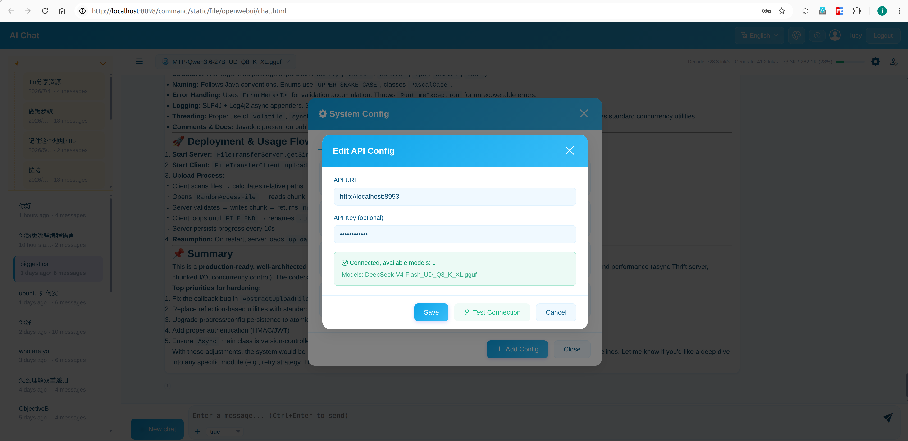
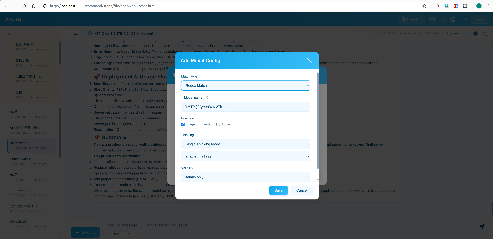
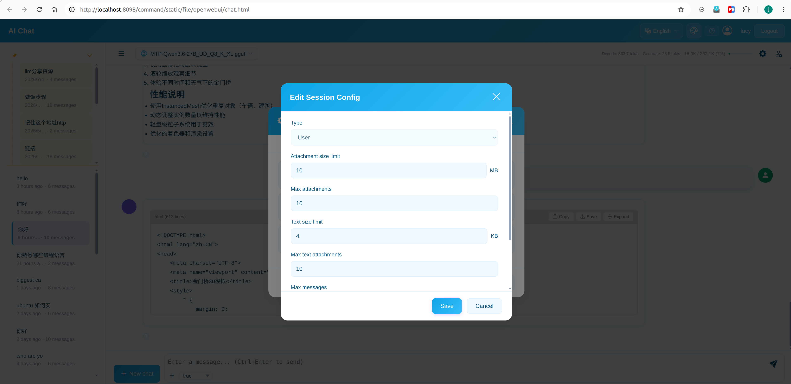
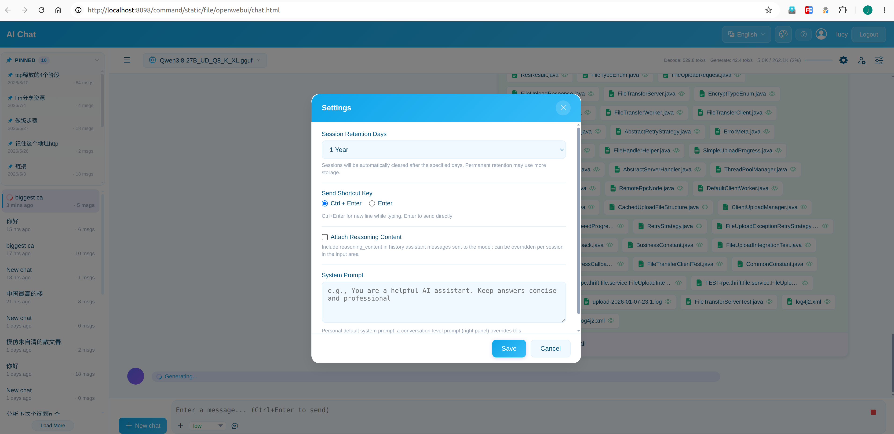
模型功能定义与思考模式配置
模型功能定义用于为匹配特定名称的模型定义多模态功能（图片/视频/音频）、思考模式与可见范围，支持精确匹配和正则表达式匹配。对于支持"深度思考"（推理）能力的模型，可在此灵活配置思考模式；通过覆盖自动检测选项，还可强制以本条配置覆盖系统自动检测出的模型配置（详见下文）。
GGUF 元数据自动检测
启动本地 GGUF 模型时，系统会自动解析模型的 tokenizer.chat_template 元数据，检测思考相关参数。如果聊天模板中包含 thinking_mode、enable_thinking、thinking 或 reasoning_effort 等关键词，系统将自动填充思考模式配置，无需手动设置。
thinking_mode 的三态值 disabled / adaptive / enabled，以及 reasoning_effort 的等级值 no_think、low、high、max 等）。检测优先级：thinking_mode > 其他参数组合。根据检测到的参数，自动确定适用的思考模式和可用等级。思考模式类型
系统支持四种思考模式，分别适用于不同能力的模型：
| 模式 | 使用参数 | 说明 | 适用模型 |
|---|---|---|---|
| 单独思考模式 | enable_thinking / thinking | 使用单个布尔参数（enable_thinking 或 thinking）控制思考的开关（true / false），只有开关没有强度档。 | 聊天模板使用布尔思考参数的模型，如 Qwen3.5、Qwen3.6 系列 |
| 多阶段思考模式 | reasoning_effort | 使用 reasoning_effort 同时控制思考的开关和强度。参数值范围包含关闭档（no_think）和强度档（low、medium、high、xhigh、max），需至少勾选一个强度档。 | 使用 reasoning_effort 控制思考的模型，如 hy3 系列 |
| 混合模式 | enable_thinking / thinking + reasoning_effort | 同时使用两个参数：布尔型参数（enable_thinking 或 thinking）控制开关状态，reasoning_effort 控制思考强度。选择关闭档时仅发送布尔参数，选择强度档时同时发送两个参数。 | 需要分离开关和强度控制的模型，如 Qwen3.8 系列、DeepSeek V4 Flash |
思考模式（thinking_mode） | thinking_mode | 使用单个参数控制思考模式，支持三态值：disabled（关闭思考）、adaptive（自适应，由模型决定是否思考）和 enabled（强制开启思考）。此模式在 GGUF 元数据中具有最高检测优先级。 | 原生支持 thinking_mode 参数的模型，如 MiniMax M3 |
thinking_mode 模式的默认选取逻辑与其他模式不同。模型启动配置页面中，thinking_mode 默认取最高等级（如 enabled），确保模型启动时思考能力最大化；而聊天页面中默认取最低等级（如 disabled），兼顾日常聊天的响应速度。思考等级
思考等级决定了模型推理过程的强度，从低到高可选等级如下：
| 等级 | 标识值 | 说明 |
|---|---|---|
| 关闭 | no_think / false | 关闭思考，模型直接回复，不输出推理过程（响应最快） |
| 低 | low | 最少推理，适合简单问题 |
| 中 | medium | 适度推理，速度与质量平衡 |
| 高 | high | 深度推理，适合复杂问题求解 |
| 极高 | xhigh | 非常深度推理，适合高复杂度任务 |
| 最大 | max | 最大推理强度，响应时间最长 |
no_think/false/disabled）不再强制要求（部分模型不提供非思考模式）。其中 thinking_mode 模式的强度档为 adaptive/enabled（disabled 可选）；混合模式的开关状态由布尔参数控制，只需配置强度档。参数映射
系统将思考模式配置转换为 --chat-template-kwargs 参数传递给 llama.cpp。以下表格展示了不同模式下的实际参数映射：
| 模式 | 选择等级 | 发送参数 |
|---|---|---|
| 单独模式 | 关闭（false） | enable_thinking=false（或 thinking=false） |
开启（true） | enable_thinking=true（或 thinking=true） | |
| 多阶段模式 | 关闭档（no_think） | reasoning_effort="no_think" |
强度档（high） | reasoning_effort="high" | |
| 混合模式 | 关闭档（no_think） | enable_thinking=false |
强度档（high） | enable_thinking=true + reasoning_effort="high" | |
思考模式（thinking_mode） | disabled | thinking_mode="disabled" |
adaptive | thinking_mode="adaptive" | |
enabled | thinking_mode="enabled" |
覆盖自动检测
本地启动的模型会被系统自动检测出实际的功能与思考配置（来源为启动参数与 GGUF 聊天模板解析）。模型功能定义中的"覆盖自动检测"选项决定两者冲突时以谁为准：
- 自动检测的模型（系统本地启动的 llama.cpp 模型）：不勾选该选项时以自动检测结果为准；勾选时以本条配置为准。
- OpenAPI 接入扫描的模型：不存在自动检测信息，模型功能定义始终生效，该选项对其无影响。
- 可见范围：无论该选项是否勾选，始终生效。
模型管理
提供对本地 GGUF 模型的全生命周期管理，从扫描、配置到运行监控。
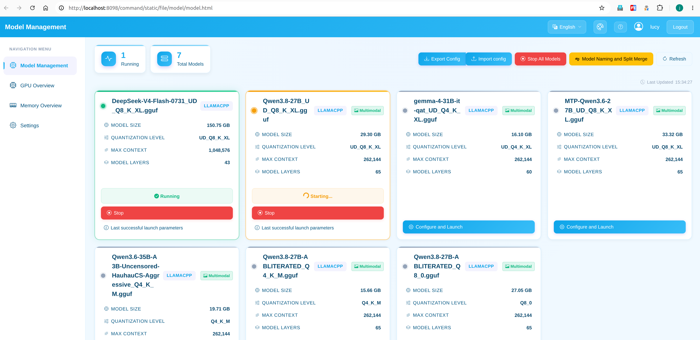
运行中的模型将显示为绿色状态，管理员可随时停止运行中的模型：
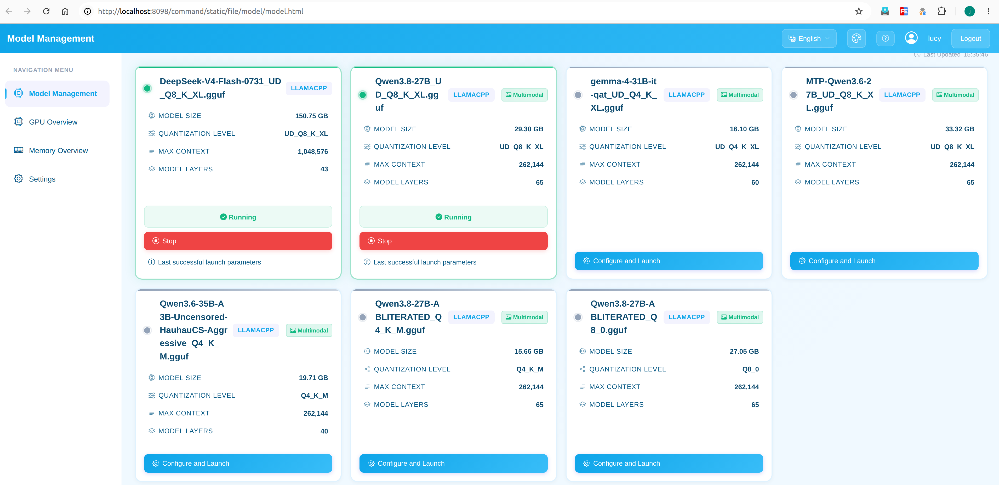
llama.cpp 使用指南
系统深度集成 llama.cpp，支持 GGUF 格式模型的本地推理。以下是模型文件组织、命名规范和相关功能的详细说明。
目录结构
模型目录推荐采用以下结构组织文件：
| 路径 | 用途 | 说明 |
|---|---|---|
<模型目录>/ | 主模型文件 | 存放所有主模型 *.gguf 文件 |
<模型目录>/mmproj/ | 多模态投影文件 | 存放视觉-语言模型的 mmproj 文件，系统自动匹配加载 |
<模型目录>/mtp/ | MTP Draft 模型 | 存放 MTP 加速用的 draft 模型文件（仅当主模型文件未内置 MTP 层时需要） |
models/qwen3.6_Q5_1.ggufmodels/mmproj/mmproj-qwen3.6-f32.ggufmodels/mtp/mtp-qwen3.6-f32.gguf支持的量化类型
系统支持 llama.cpp 全部量化格式，按精度从高到低分类如下：
| 精度等级 | 支持的量化格式 | 推荐场景 |
|---|---|---|
| 高精度 | F32 BF16 F16 IQ8 | 最高精度推理，占用显存最大 |
| Q8 | Q8_0 Q8_K Q8_K_P UD_Q8_K_XL | 接近 FP16 精度，显存减半 |
| Q6 | Q6_K Q6_K_L Q6_K_P UD_Q6_K UD_Q6_K_XL | 精度与显存的平衡选择 |
| Q5 | Q5_0 Q5_1 Q5_K Q5_K_S Q5_K_M Q5_K_P 等 | 日常推理推荐，精度损失极小 |
| Q4 | Q4_0 Q4_1 Q4_K Q4_K_S Q4_K_M IQ4_NL IQ4_XS IQ4_KS 等 | 显存受限场景首选，性价比高 |
| Q3 | Q3_K Q3_K_S Q3_K_M IQ3_XXS IQ3_XS IQ3_S IQ3_M 等 | 极端显存受限场景 |
| Q2 | Q2_K Q2_K_S Q2_K_L IQ2_XXS IQ2_XS IQ2_S IQ2_M 等 | 极限压缩，精度损失较大 |
| IQ1/TQ | IQ1_S IQ1_M TQ1_0 TQ2_0 | 实验性极低比特量化 |
| MoE | MXFP4_MOE | 混合专家模型专用量化 |
主模型文件命名规范
主模型文件需遵循统一命名格式，便于系统自动识别和匹配：
| 规则 | 说明 |
|---|---|
| 格式 | 模型名_量化类型.gguf |
| 分隔符 | 模型名与量化类型之间使用下划线 _ 连接 |
| 基础名 | 第一个下划线之前的部分视为模型基础名，用于匹配 mmproj 和 MTP 文件 |
| 示例 | qwen3.6_Q5_1.gguf → 基础名 qwen3.6，量化类型 Q5_1 |
_）。因为系统使用第一个下划线作为分隔符来区分模型名称和量化类型。如果模型名本身包含下划线，系统将错误地将其截断，导致模型无法正确识别。例如：qwen_3.6_Q5_1.gguf 会被解析为基础名 qwen、量化类型 3.6_Q5_1，这是错误的。多模态文件 (mmproj) 命名规范
mmproj 文件用于视觉-语言多模态模型，需放置在模型目录下的 mmproj/ 子目录中。文件名必须以 mmproj- 开头，系统会自动根据主模型文件名进行匹配：
| 优先级 | 匹配规则 | 示例 |
|---|---|---|
| 优先级 1 | 全量名称匹配 | mmproj/mmproj-qwen3.6_Q5_1.gguf |
| 优先级 2 | 基础名 + 精度后缀匹配mmproj/mmproj-{基础名}-{精度}.gguf | mmproj/mmproj-qwen3.6-f32.gguf |
mmproj/mmproj-qwen3.6-bf16.gguf 等 | ||
| 优先级 3 | 基础名兜底匹配 | mmproj/mmproj-qwen3.6.gguf |
F32 / f32 均可识别）。支持的精度后缀包括：F32、BF16、F16、Q8_0。MTP Draft 模型文件命名规范
MTP (Multi-Token Prediction) 是 llama.cpp 的多 Token 预测加速功能。如果主模型文件自身已包含 MTP 层，则无需额外的 Draft 模型文件；仅当主模型不包含 MTP 层时，才需要将 Draft 模型放置在模型目录下的 mtp/ 子目录中，文件名必须以 mtp- 开头：
| 优先级 | 匹配规则 | 示例 |
|---|---|---|
| 优先级 1 | 基础名 + 精度后缀匹配mtp/mtp-{基础名}-{精度}.gguf | mtp/mtp-qwen3.6-f32.gguf |
mtp/mtp-qwen3.6-bf16.gguf 等 | ||
| 优先级 2 | 基础名兜底匹配 | mtp/mtp-qwen3.6.gguf |
GGUF 分片合并
大模型下载后可能被拆分为多个分片文件（如 model-00001-of-00002.gguf）。系统提供自动识别和一键合并功能：
- 自动检测点击"模型命名与分片合并"按钮，系统自动扫描模型目录中的分片文件
- 一键合并点击"一键重命名"按钮，系统将自动合并分片并删除原始分片文件
- 命名规范合并后的文件自动重命名为
模型名_量化类型.gguf格式
启动配置与底层参数映射
启动模型前可进行精细化参数调优。系统将 UI 配置转换为 llama.cpp 的命令行参数，实现高性能推理。
一、文本采样参数（控制"说什么"）
这些参数直接作用于模型输出下一个 Token 时的概率分布（Logits），决定生成文本的创造性、多样性和连贯性。
| UI 配置项 | 底层参数 | 详细说明 |
|---|---|---|
| 温度 | --temp | 控制生成的随机性。在 Softmax 层对 Logits 进行缩放： • 值越低（如 0.2），模型越倾向于选择概率最高的词，输出稳定但死板 • 值越高（如 0.8-1.2），分布越平滑，输出更具创造性，但可能产生幻觉 • 设为 0 代表贪婪解码（Greedy Decoding），每次选择概率最高的词 范围：0.00-2.00，默认：0.80 |
| Top K | --top-k | 绝对数量截断。预测下一个词时，仅保留概率排名前 K 个的词，直接丢弃其他所有词： • 设为 40，模型只会在最有可能的 40 个词中采样 • 有效防止模型在温度较高时抽出极其离谱的"长尾乱码" • 设为 -1 代表完全禁用此功能（等同于设为词表大小） 范围：-1-1024，默认：40 |
| Top P | --top-p | 累积概率截断（Nucleus Sampling / 核采样）。将候选词按概率从高到低排序，累加概率，当累加值达到 P 时截断： • 设为 0.9 意味着只在占据 90% 概率总和的核心词汇中采样 • 比 topK 更动态：如果某个词绝对领先，候选池可能只有 1 个词；如果概率分散，候选池可能有几十个 • 设为 1.0 表示禁用 范围：0.00-1.00，默认：0.95 |
| Min P | --min-p | 相对概率阈值截断（llama.cpp 推荐的现代采样方法）。设置相对于当前概率最高 Token 的底线阈值： • 假设最可能的词概率是 50%，minP 设为 0.1，则阈值 = 50% × 0.1 = 5%，低于 5% 的词被丢弃 • 能完美平衡高置信度（少选）和低置信度（多选）场景，通常可替代 topP 使用 范围：0.00-1.00，默认：0.05 |
| 重复惩罚 | --repeat-penalty | 对已出现过的 Token 的概率直接打折： • 1.0 是中立值（不惩罚也不鼓励） • 设为 1.1-1.2 可有效防止模型像复读机一样重复同一句话 • 过高（如 1.5+）会导致模型强行拼凑生僻词，语言支离破碎 范围：0.10-2.00，默认：1.00 |
| 重复最后 N | --repeat-last-n | 决定重复惩罚向前追溯多少个 Token： • 设为 64 代表只惩罚最近 64 个 Token 中的重复词 • 设为 -1 代表追溯整个当前上下文长度（Context Size） • 设为 0 禁用此功能 可选值：0/16/32/64/128/256/512/1024/-1，默认：64 |
| 存在惩罚 | --presence-penalty | 只要一个词在上下文中出现过（无论几次），就给予固定数值的惩罚： • 主要用于鼓励模型转换话题，避免反复讨论同一内容 • 正数鼓励聊新事物，负数鼓励聚焦当前话题 范围：-2.00-2.00，默认：0.00 |
| 频率惩罚 | --frequency-penalty | 根据一个词在上下文中出现的次数成比例地给予惩罚： • 出现得越多，惩罚越重 • 主要用于抑制词频过高的常用词（如"然后"、"所以"），让用词更丰富 范围：-2.00-2.00，默认：0.00 |
二、硬件与系统调度参数（控制"怎么算"）
这些参数决定了引擎如何利用 CPU、内存和 GPU，对推理性能（Tokens/s）的影响极大。
| UI 配置项 | 底层参数 | 详细说明 |
|---|---|---|
| 上下文大小 | -c | 设置 KV Cache 大小，影响模型记忆长度。上下文越长，模型能记住的历史信息越多，但内存占用也越大。建议根据实际对话长度设置，避免浪费资源。 |
| GPU 加载层数 | -ngl | 指定加载至显存的层数，层数越多推理越快。特别注意：设置为 0 表示采用纯 CPU 推理，不使用任何 GPU 加速。 |
| 生成线程 | --threads | 逐字生成阶段（Decoding）使用的 CPU 线程数。并非越大越好：在多路 CPU（如双路 Xeon）上，跨 NUMA 节点调用线程会导致严重的内存带宽瓶颈，反而拖慢速度。通常设置为不超过单颗 CPU 的物理核心数即可。 |
| 逻辑批处理 | -b | 处理长 Prompt 时（Prefill 阶段），系统一次性并行处理的 Token 数量上限。默认通常为 512 或 2048。较大的值能加快长文本的前置计算速度，但会显著增加显存/内存峰值占用。 |
| 物理批处理 | -ub | llama.cpp 在底层将 BatchSize 进一步切分为多个微批次（Micro-batch）进行循环处理。这是一种内存优化手段，通常 UbatchSize ≤ BatchSize。合理设置可避免大批量 Prompt 计算时显存溢出（OOM）。 |
| 批处理线程 | --threads-batch | 前置 Prompt 处理阶段（Prefill）使用的 CPU 线程数。由于 Prefill 是计算密集型任务（矩阵乘法为主），对多线程的扩展性比 Decoding 好。此值通常可以设置得比生成线程更高，甚至可以等于系统总物理核心数。 |
| GPU 选择 | selectedGpuIds | 指定将模型权重卸载（Offload）到哪些具体的 GPU 上。格式为逗号分隔的 GPU 序号（如 "0,1,2,3"）。在异构多卡阵列（如混合不同显存容量的显卡）时，可精准切分模型层到指定设备，避免被短板显卡的显存上限卡死。 |
| 张量分割 | --tensor-split | 定义多 GPU 间的显存分配比例，与 GPU 选择配合使用，实现精细的显存管理。 |
| 主 GPU | CUDA_VISIBLE_DEVICES 重排 | 指定主 GPU 序号，系统自动将其重排到 CUDA_VISIBLE_DEVICES 首位（对应 llama.cpp 逻辑设备 0），无需额外的 -mg 参数。 |
| 张量并行 | -sm tensor/graph | 启用 SM Tensor 调度，实现多卡并行加速，大幅提升大模型的推理吞吐量。 |
| 模型加载模式 | --load-mode | 模型权重加载方式，仅 LLAMACPP 启动方式支持（IK_LLAMACPP 固定使用 --mlock，配合默认开启的 mmap，等效 mmap+mlock），默认：mmap+mlock：• mmap+mlock：内存映射加载并附加 mlock• mlock：全量加载到 RAM 并锁定内存页，不换出、不压缩，性能最高• mmap：内存映射加载，由系统按需换入权重• auto：除非设备不支持，否则使用 mmap• none：不使用特殊加载模式，常规读入 RAM• dio：可用时使用 Direct I/O 直读 RAM |
| 懒加载模式 | --lazy-mode | 特定张量（如逐层嵌入）按需读盘，仅 LLAMACPP 启动方式支持，默认：off： • off：全部张量常驻内存• auto：仅大于 4 GiB 的张量按需从磁盘读取• on：全部支持的张量按需从磁盘读取，速度明显变慢搭配规则： auto / on 仅在模型加载模式为 auto 或 mmap 时可用；mlock、mmap+mlock、none、dio 只能使用 off。界面上选到非法组合时，懒加载模式会自动切回 off。 |
| 预测推理 (Speculative Decoding) | --spec-type / --spec-draft-n-max / --spec-draft-n-min / --spec-draft-p-min / --gpu-layers-draft / --model-draft | 启用预测推理（投机解码）加速，支持 MTP / DFlash / DSpark 三种类型：Draft 模型提前预测多个 Token，主模型一次性校验接受，减少推理步数，显著提升生成速度。各类型的差异及完整参数配置详见下方「预测推理参数说明」。 |
预测推理（Speculative Decoding）参数说明
预测推理（又称投机解码）通过 Draft 模型提前预测后续多个 Token，再由主模型一次性校验，从而减少推理步数、显著提升生成速度。启动配置中的「预测推理」配置项支持以下加速类型：
| 类型 | 说明 | Draft 模型要求 |
|---|---|---|
| 关闭 | 不启用预测推理，按常规逐 Token 解码 | — |
| MTP（Multi-Token Prediction） | 多 Token 预测加速，利用模型的 MTP 能力进行草稿预测 | 主模型文件内置 MTP 层时无需额外文件；否则自动探测模型目录下 mtp/ 子目录中的 Draft 模型（命名规则见上文「MTP Draft 模型文件命名规范」） |
| DFlash | DFlash 草稿模型预测加速 | 必须手动指定独立的 Draft 模型文件 |
| DSpark | DSpark 草稿模型预测加速 | 必须手动指定独立的 Draft 模型文件 |
选择类型后，可配置以下参数：
| UI 配置项 | 底层参数 | 详细说明 |
|---|---|---|
| 类型 | --spec-type | 选择预测推理类型（MTP / DFlash / DSpark）。LLAMACPP 启动方式对应 --spec-type draft-<类型>；IK_LLAMACPP 启动方式使用 --spec-type <类型>:n_max=N,n_min=N,p_min=P 内联语法。 |
| n-max | --spec-draft-n-max | 每次 Draft 预测的 Token 数，范围：≥1，默认：3。值越大单次校验的 Token 数越多，加速效果越明显，但校验失败回退的代价也越高。 |
| n-min | --spec-draft-n-min | Draft 最小 Token 数：每步 Draft 模型至少生成这么多 Token（在此之前 p-min 不会提前终止草稿），范围：≥0 且 ≤ n-max，默认：0。调高该值可在草稿置信度提前下降时仍保证每步有最低数量的 Token 参与校验。 |
| p-min | --spec-draft-p-min | 最小接受概率，范围：0.00-1.00，默认：0.00。用于控制 Draft Token 的接受标准，在加速效果与输出质量之间取得平衡。 |
| draft-ngl | --gpu-layers-draft | Draft 模型加载到 GPU 的层数。LLAMACPP 启动方式支持数值 / auto / all（默认：auto）；IK_LLAMACPP 启动方式仅支持数值。GPU 层数越多，草稿预测越快，校验失败回退的延迟也越低。 |
| Draft 模型 | --model-draft | Draft 模型文件路径，选择 DFlash / DSpark 类型后显示该配置项，文件不存在时拒绝启动。MTP 类型无需手动指定：主模型文件内置 MTP 层时直接生效；否则系统自动探测 mtp/ 子目录中的 Draft 模型。 |
--spec-type draft-<类型> --spec-draft-n-max N --spec-draft-n-min N --spec-draft-p-min P --gpu-layers-draft <层数> --model-draft <路径> 传递；IK_LLAMACPP 启动方式下，n_max / n_min / p_min 仅支持内联语法 --spec-type <类型>:n_max=N,n_min=N,p_min=P（Draft 模型通过 --model-draft 指定，Draft 模型 GPU 层数通过 --gpu-layers-draft 指定）。mtp/ 子目录中也未探测到 Draft 模型，则不加载 Draft 模型，不影响模型启动。三、缓存与状态参数
这些参数控制内存使用和会话状态管理。
| UI 配置项 | 底层参数 | 详细说明 |
|---|---|---|
| 缓存大小 | --cache-ram | 限定或预分配上下文缓存（KV Cache）的容量（单位：MiB）。上下文越长，占用的 KV Cache 越大。对于巨型 MoE 模型，长文本带来的缓存膨胀非常可观，通过此参数可限制内存溢出。 |
| KV Cache 量化 | -ctk / -ctv | 设置 KV 缓存量化类型（如 f16, q8_0, q4_0 等）。量化 KV Cache 可以显著减少内存占用，但可能轻微影响推理精度。显存受限时推荐使用 q8_0 或 q4_0。 |
| 检查点步长 | --checkpoint-min-step | 上下文检查点的最小间隔步长。检查点用于会话状态的持久化：将特定 Prompt 的 KV 缓存落盘保存，下次可直接读取而无需重新推理。此参数控制检查点创建的频率。 |
| 检查点数量 | --ctx-checkpoints | 每个 slot 最大检查点数量。配合检查点步长使用，管理状态文件的生成数量，避免磁盘空间被大量检查点文件占满。 |
四、其他服务参数
| UI 配置项 | 底层参数 | 详细说明 |
|---|---|---|
| 端口号 | --port | 模型服务监听的 HTTP 端口号，默认 8080。确保端口未被其他服务占用。 |
| 并行任务数 | --parallel | 支持同时处理的并发请求数。增加此值可提升多用户场景下的吞吐量，但会增加内存占用。 |
| Jinja 模板 | --jinja | 启用 Jinja2 聊天模板支持。部分模型（如 Qwen、Llama 3）使用 Jinja 模板格式，启用后可正确解析系统提示词和用户消息。 |
| MOE 层数 | --n-cpu-moe | 指定 CPU 加载的 MOE（Mixture of Experts）专家层数。适用于 MoE 架构模型（如 Mixtral），控制专家路由的计算方式。 |
CUDA_VISIBLE_DEVICES 的第一位，使 llama.cpp 自然以该显卡作为主卡（逻辑设备 0），无需额外的 -mg 参数。张量分割（Tensor Split）：显存分配会按重排后的物理显卡顺序依次对应，无需手动调整顺序，避免显存分配错位。
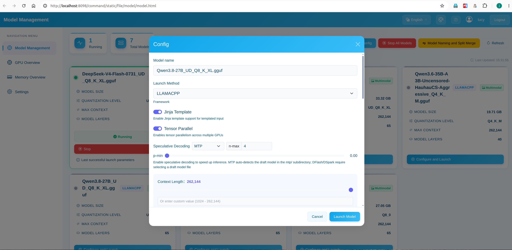
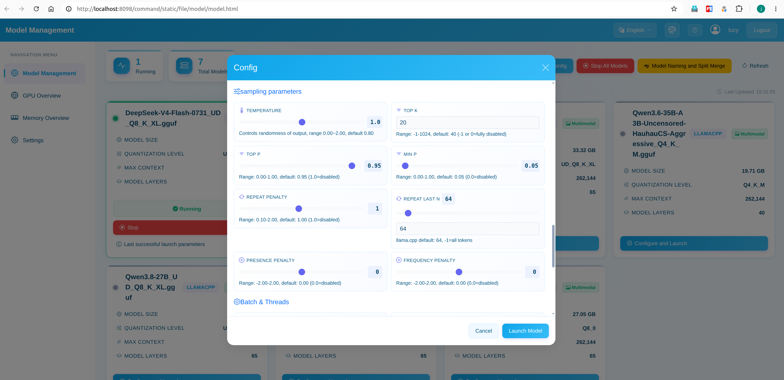
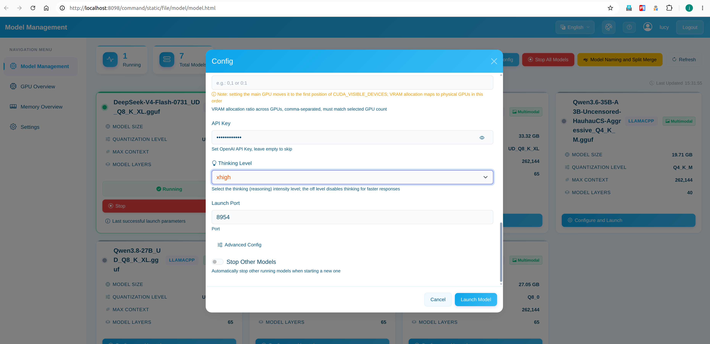
GPU 监控
内置 GPU 监控面板，每 10 秒同步一次数据，记录最近 60 个样本的趋势图。
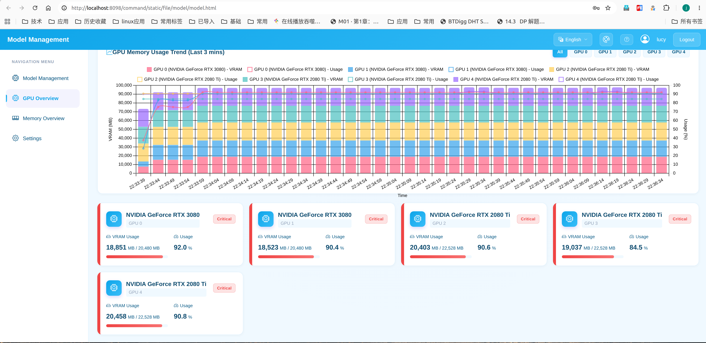
nvidia-smi 实时解析，可直观查看每张显卡类型和显存占用情况。nvidia-smi 工具，该工具仅适用于 NVIDIA 显卡。macOS 系统使用 Apple Silicon (M 系列) 或集成显卡，不提供类似 NVIDIA 的独立 GPU 监控接口，因此 macOS 下不提供 GPU 监控面板。内存监控
内存监控面板展示系统内存使用情况：
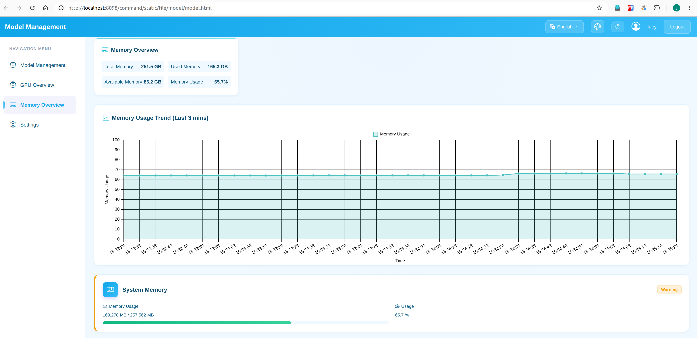
- 概览卡片实时显示总内存、已用内存、可用内存及整体使用率百分比。
- 趋势图表绘制近 3 分钟的内存使用波动曲线，帮助分析模型加载时的内存峰值。
- 状态进度条以可视化进度条形式直观呈现当前内存占用情况。
模型文件维护
针对大模型分片文件，提供自动化处理工具：
- 自动合并识别
model-00001-of-00002.gguf等分片并一键合并为单文件。 - 规范化重命名将杂乱的文件名统一为
模型名_量化类型.gguf格式。
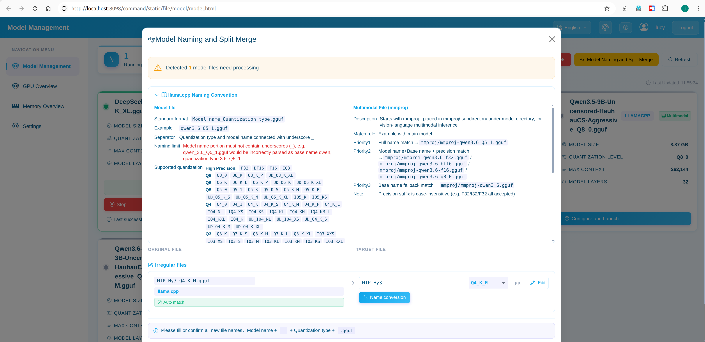
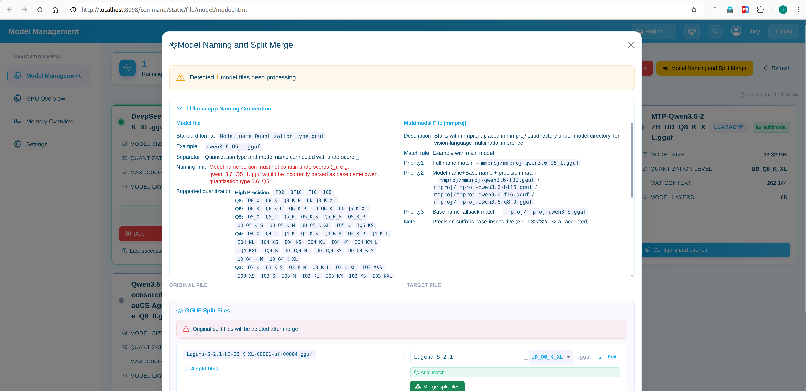
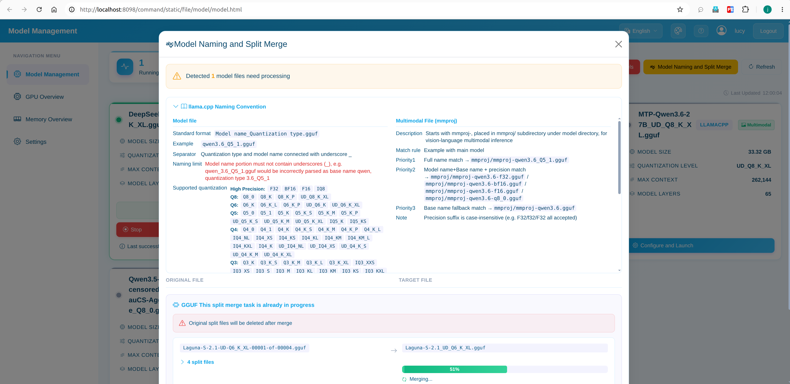
底层环境设置
配置 llama.cpp 执行路径和模型存放根目录。
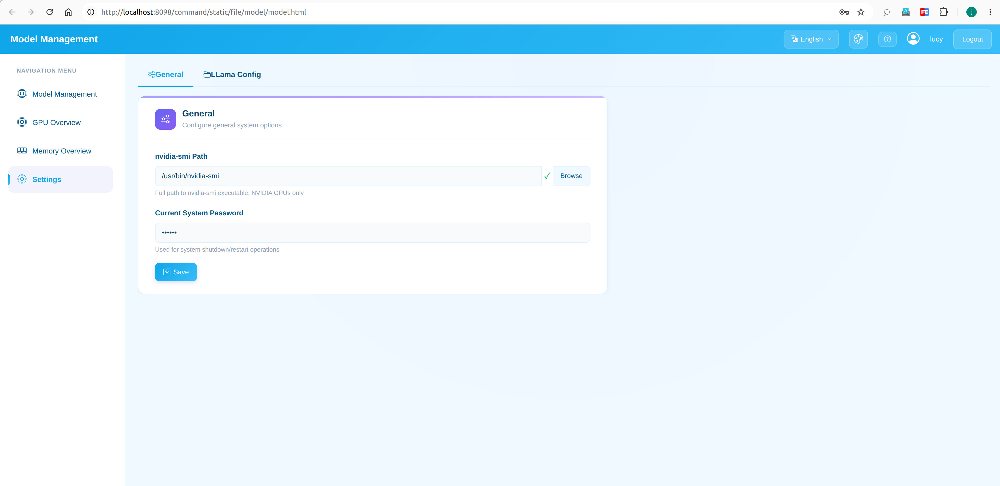
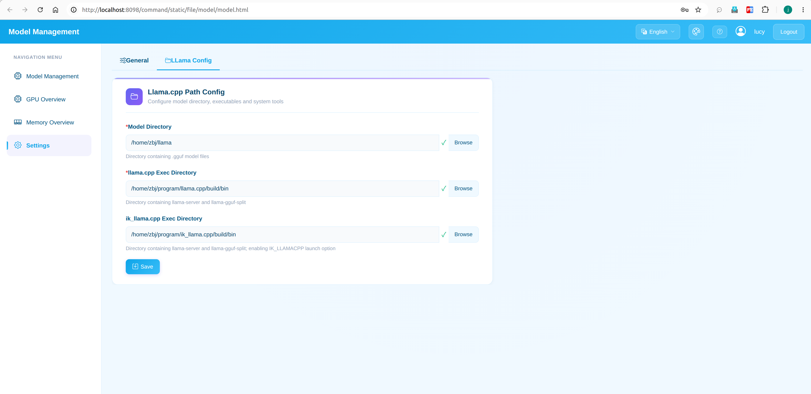
定时重启管理
为降低能耗和维护系统稳定性，提供灵活的定时开关机方案。
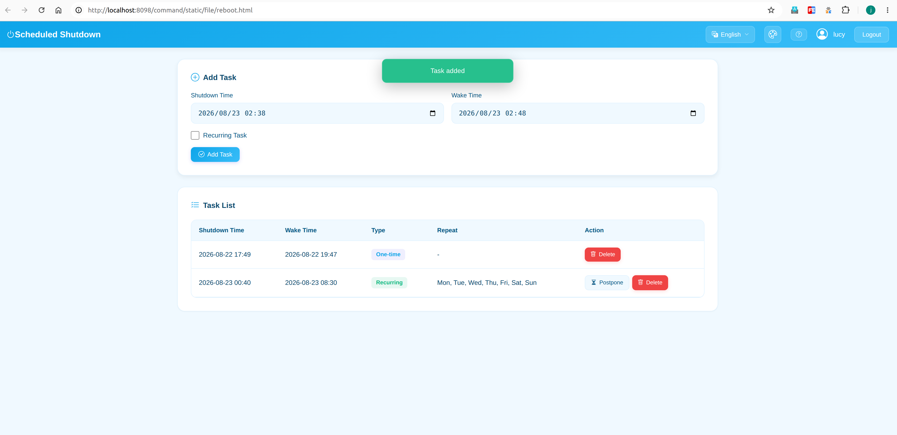
任务调度与预警
支持两种任务模式：
| 模式 | 特点 | 适用场景 |
|---|---|---|
| 一次性任务 | 执行一次后自动删除 | 临时维护、单次实验 |
| 周期性任务 | 可指定工作日，到期后自动计算下一周期 | 每日定时关机/唤醒 |
任务管理：管理员可查看所有已创建的任务，包括执行时间、状态（待执行/执行中/已过期）以及实时倒计时。支持对任务进行删除或推迟执行（Postpone）。
预警机制：当任务距离执行时间不足 10 分钟时，系统会在页面顶部弹出倒计时警告卡片。
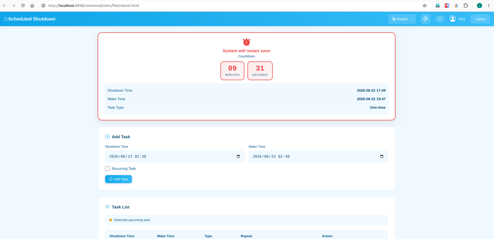
混合大模型管理系统 -
安全 · 高效 · 便捷